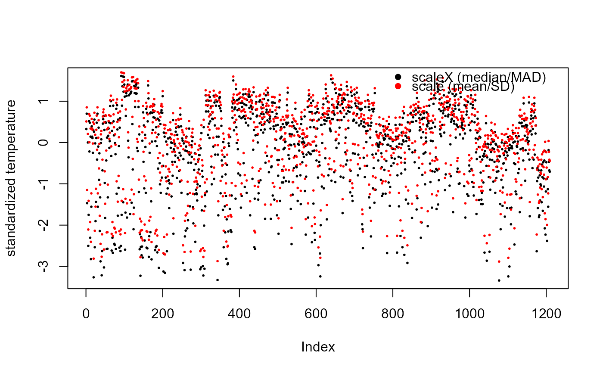

scaleX(x, center = TRUE, scale = TRUE, na.rm = TRUE)a numeric matrix-like object
logical scalar or numeric vector. If TRUE, the column
medians are subtracted; if FALSE, no centering is performed.
Alternatively, a numeric vector of length ncol(x) supplies the
values to subtract directly.
logical scalar or numeric vector. If TRUE, the
(centered) columns are divided by their MAD; if FALSE, no scaling
is performed. Alternatively, a numeric vector of length ncol(x)
supplies the divisors directly.
logical; if TRUE (default), missing values are omitted
when the column medians and MADs are computed. Ignored for whichever of
center and scale is given as a numeric vector. Missing
entries of x itself always remain missing in the result.
the centered and scaled matrix. The numeric centerings and scalings used (if
any) are returned as attributes "scaled:center" and
"scaled:scale".
The function mirrors the interface of scale: both
center and scale accept either a logical flag or a numeric
vector of values to use directly, in which case that vector must have one
entry per column of x.
Because the median absolute deviation is invariant to location shifts, it
has the same value whether computed before or after centering. The scale
factors are therefore computed from the original columns, so that the
returned "scaled:scale" remains interpretable independently of
center.
A zero or non-finite scaling factor can produce undefined or non-finite
results. scaleX emits a warning naming the affected columns rather
than failing, since the result may still be usable when those columns are
subsequently dropped.
Other transform:
boxCox(),
boxCoxLambda(),
logSt(),
yeoJohnson()
x <- bedrock::Pizza$temperature
# robust standardization is far less affected by the extreme values
plot(scaleX(x), col = "black", pch = 16, cex = 0.4,
ylab = "standardized temperature")
points(scale(x), col = "red", pch = 16, cex = 0.4)
legend("topright", legend = c("scaleX (median/MAD)", "scale (mean/SD)"),
col = c("black", "red"), pch = 16, bty = "n")

# the centerings and scalings used are recoverable
z <- scaleX(cbind(a = c(1, 2, 3, 4, 100), b = c(10, 20, 30, 40, 50)))
attr(z, "scaled:center")
#> a b
#> 3 30
attr(z, "scaled:scale")
#> a b
#> 1.4826 14.8260
# supplying the values directly, as base::scale allows
scaleX(matrix(1:6, ncol = 2), center = c(0, 0), scale = c(1, 2))
#> [,1] [,2]
#> [1,] 1 2.0
#> [2,] 2 2.5
#> [3,] 3 3.0
#> attr(,"scaled:center")
#> [1] 0 0
#> attr(,"scaled:scale")
#> [1] 1 2